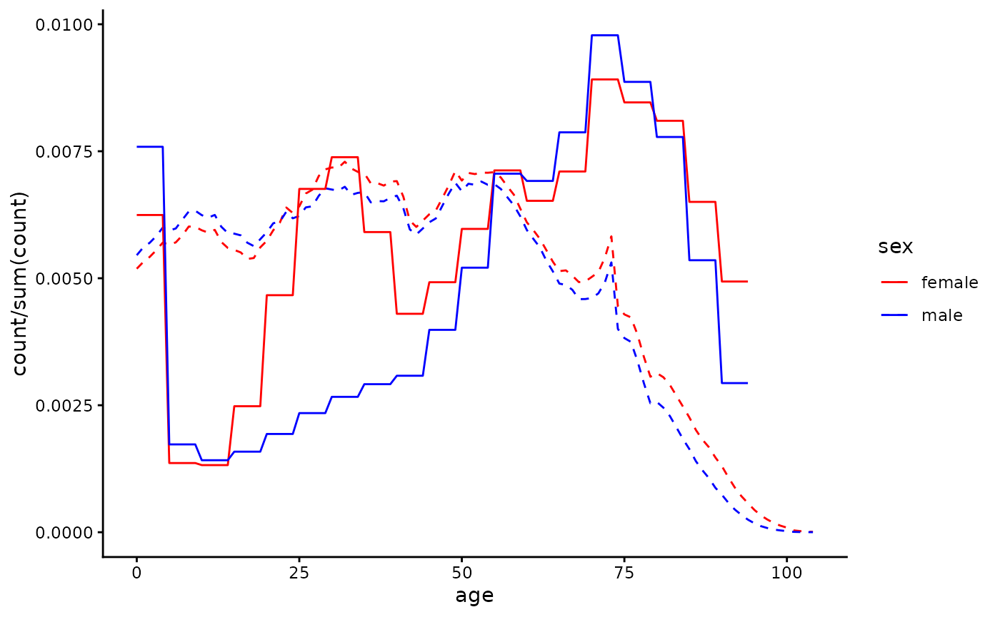
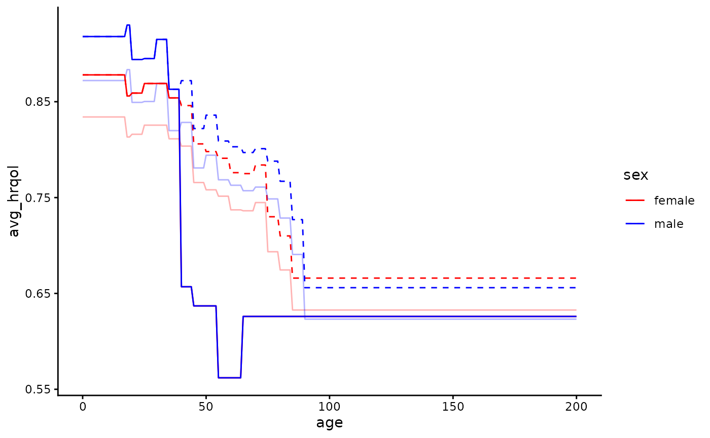
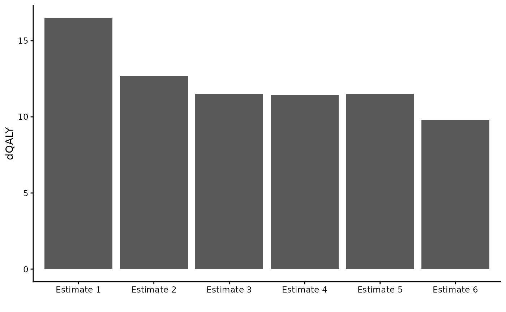

Worked example: using the dQALY package to value outputs of an infectious disease model
Imagine that we had built an infectious disease model, simulating CPE bloodstream infections among English hospital inpatients & the deaths resulting from those infections. Imagine that because of data availability, the model population does not have sex/age structure. We want to produce a single estimate of the average number of QALYs that would be lost on the death of a person in our model - this single estimate will be used to value all deaths.
We’ll use this example to demonstrate why or how one might use
several of the features of the calculate_dQALY function -
specifically, the features that enable the estimation of QALY losses for
user-supplied cohorts and groups.
Firstly, we’ll make the age groups we need to supply to the function. We want to group all ages together:
all_ages <- data.table(lower = 0, upper = 100)We could use the default data stored in the package and produce an
estimate of the average number of QALYs lost on the death of a person
from the English population. We supply our defined age groups to the
argument collapse_age and set the argument
collapse_sex to TRUE:
calculate_dQALY(country = "England", year = 2020,
collapse_age = all_ages,
collapse_sex = TRUE)
#> age lower upper dQALY
#> 1 0-100 0 100 16.50278However, the average QALYs lost due to death in the general English population is probably different to the QALYs lost on the death of an English hospital inpatient. We could make several adjustments to the calculation in order to try to produce a more accurate estimate.
Adjusting the cohort data
When we use either the collapse_age or
collapse_sex arguments, the function uses what we’ll refer
to as ‘cohort data’ - information on the age/sex distribution of the
relevant population - to produce weighted means for the various
population groups we require. When the argument country is
set to England, the default cohort data used in the calculation is
English population data from the ONS. But we know that the age/sex
distribution of hospital inpatients is different from the age/sex
distribution of the population at large. Instead of using the default
English population data stored by the package, we’ll construct a new
cohort using English hospital admissions data and supply this to the
function instead.
# Using data on Hospital Admitted Patient Care Activity, 2019-20
# https://digital.nhs.uk/data-and-information/publications/statistical/hospital-admitted-patient-care-activity/2019-20/summary-reports---apc---patient
temp <- tempfile(fileext = ".xlsx")
download.file(url = "https://digital.nhs.uk/binaries/content/documents/corporate-website/publication-system/statistical/hospital-admitted-patient-care-activity/2019-20/summary-reports---apc---patient/summary-reports---apc---patient/publicationsystem%3AbodySections%5B2%5D/publicationsystem%3AdataFile",
temp, mode = "wb")
hospital_cohort <- as.data.table(readxl::read_xlsx(temp, sheet = 1)) |>
setnames(new = c("age", "male", "female")) |>
melt(measure.vars = c("male", "female"),
variable.name = "sex",
value.name = "count")
hospital_cohort <- hospital_cohort[age != "Unknown"][
, lower := as.numeric(substring(age, 1, 2))
][
, upper := lower + 4
][
, .(age = c(lower:upper), count = rep(count/5, 5)), by = c("lower", "upper", "sex")
][
, c("lower", "upper"):=NULL
]Let’s examine the difference between the default cohort used in the
calculation and this new hospital cohort we constructed, to get a sense
of how switching cohorts will affect the output of the calculation. We
can use the relevant package data function - package_cohort
- to return the cohort data stored in the package, and then plot it
against our hospital cohort:
default_cohort <- package_cohort(country = "England", year = 2020)
ggplot() +
geom_line(data = default_cohort,
aes(x = age, y = count/sum(count), colour = sex), linetype = 2) +
geom_line(data = hospital_cohort,
aes(x = age, y = count/sum(count), colour = sex)) +
theme_classic() +
scale_colour_manual(values = c("red", "blue"))
Now we’ll re-do the calculation, supplying the
hospital_cohort data to the cohort argument of
the function. We can see that when using a hospital cohort the QALY loss
estimate we produce is smaller, as the hospital population is older than
the population at large and QALY loss decreases with age at death:
calculate_dQALY(country = "England", year = 2020,
collapse_age = all_ages,
collapse_sex = TRUE,
cohort = hospital_cohort)
#> age lower upper dQALY
#> 1 0-100 0 100 12.68668We now have an estimate of the average QALY loss caused by the death of a patient chosen randomly from hospital inpatients. But rates of CPE infection and/or CPE mortality given infection differ by age and gender - both infection and death from infection are more likely in older age groups. Instead of using a cohort with age/sex distribution representative of all hospital inpatients, we might want to use a cohort with age/sex distribution representing hospital inpatients who die of CPE infection. Researchers with access to mortality data for those with hospital-acquired CPE could use that data to make a cohort - here we’ll make very a crude adjustment, applying weights to those over 60 so that they are over-represented in the cohort, to reflect their greater risk of death:
adj_hospital_cohort <- copy(hospital_cohort)[age > 60, count := count*1.5]
calculate_dQALY(country = "England", year = 2020,
collapse_age = all_ages,
collapse_sex = TRUE,
cohort = adj_hospital_cohort)
#> age lower upper dQALY
#> 1 0-100 0 100 11.51243Adjusting the life expectancy data
What if we wanted to account for the fact that life expectancy among
people who are likely to be in hospital at any given time is probably
worse than it is in the general population? A quick and easy way to do
this is to use the argument smr (standard mortality ratio)
to make adjustments to the default life tables used in the calculation -
for details about how exactly this adjustment happens, refer to the methods vignette. The default value of the
argument is 1 - here we’re going to increase mortality rates by 5% at
each year of age:
calculate_dQALY(country = "England", year = 2020,
smr = 1.05,
collapse_age = all_ages,
collapse_sex = TRUE,
cohort = adj_hospital_cohort)
#> age lower upper dQALY
#> 1 0-100 0 100 11.41354However, if you had your own data that you felt better represented
the life expectancy of an inpatient population, you could supply it
directly to the function (to the argument life_table)
rather than adjusting the data that is already stored in the
package.
Adjusting the utility data
What if we wanted to account for the fact that hospital patients
likely have greater morbidity than the general population? Like we used
the argument smr to adjust the life tables, we can use the
argument qcm to adjust the utility norms for the general
English population - here we’re going to make utility scores 5% lower
across the board:
calculate_dQALY(country = "England", year = 2020,
qcm = 0.95,
collapse_age = all_ages,
collapse_sex = TRUE,
cohort = adj_hospital_cohort)
#> age lower upper dQALY
#> 1 0-100 0 100 11.51243Again, instead of making adjustments to the default utility data from the general English population, we could alternatively try to find utility data collected from a population that we think is closer to the population we’d like to represent. Here’s an example of how we might go about that.
# Retrieving data from a study that collected HRQoL of people with long term conditions in UK
url <- "https://www.ncbi.nlm.nih.gov/books/NBK592229/table/table18/?report=objectonly"
element <- ".large_tbl"
ltc_norms <- rvest::read_html(url) |>
rvest::html_element(element) |>
rvest::html_table(fill = T) |>
as.data.table()
# Cleaning up the utility data, putting it in the form required by the function
names <- ltc_norms[1, ] |>
unlist()
setnames(ltc_norms, new = names)
ltc_norms <- ltc_norms[4, -c(1,3,5,7,9:11)] |>
melt(measure.vars = patterns("years"),
variable.name = "lower",
value.name = "avg_hrqol")
ltc_norms[, avg_hrqol := as.numeric(substring(avg_hrqol, 1, 5))]
ltc_norms[, upper := as.numeric(substring(lower, 4, 5))]
ltc_norms[, lower := as.numeric(substring(lower, 1, 2))]
ltc_norms <- ltc_norms[, .(sex = c("male", "female")), by = c("lower", "upper", "avg_hrqol")]This study only has utility data for age groups covering ages 40-74.
We’ll assume all older ages have the same utility as the oldest group
for which we have data, and for younger age groups we’ll use the general
population norms. We can return and then manipulate those norms using
the function package_norms:
ltc_norms[upper == max(upper), upper := 200]
default_norms <- package_norms(country = "England") |> as.data.table()
ltc_norms <- rbind(default_norms[lower < 40], ltc_norms)It’s up to us to make a judgement about whether these new norms
better approximate the HRQoL in the population we’re modelling than the
default norms for the general population. We can plot our new utility
norms against the default norms (and also if we want against the norms
when adjusted using the qcm argument) to help make this
judgement:
ggplot() +
geom_line(data = default_norms[, .(age = c(lower:upper)), by = c("lower", "upper", "sex", "avg_hrqol")],
aes(x = age, y = avg_hrqol, colour = sex), linetype = 2) +
geom_line(data = default_norms[, .(age = c(lower:upper)), by = c("lower", "upper", "sex", "avg_hrqol")],
aes(x = age, y = avg_hrqol*0.95, colour = sex), alpha = 0.3) +
geom_line(data = ltc_norms[, .(age = c(lower:upper)), by = c("lower", "upper", "sex", "avg_hrqol")],
aes(x = age, y = avg_hrqol, colour = sex)) +
theme_classic() +
scale_colour_manual(values = c("red", "blue"))
Then we can (if we judge they’re more suitable) use the new norms in
our calculation by supplying the data to the argument
norms:
calculate_dQALY(country = "England", year = 2020,
norms = ltc_norms,
collapse_age = all_ages,
collapse_sex = TRUE,
cohort = adj_hospital_cohort)
#> age lower upper dQALY
#> 1 0-100 0 100 9.780467Examining our various estimates
estimates <- data.table(estimate = c("Estimate 1", "Estimate 2",
"Estimate 3", "Estimate 4",
"Estimate 5", "Estimate 6"),
dQALY = c(calculate_dQALY(country = "England", year = 2020,
collapse_age = all_ages,
collapse_sex = TRUE)$dQALY,
calculate_dQALY(country = "England", year = 2020,
collapse_age = all_ages,
collapse_sex = TRUE,
cohort = hospital_cohort)$dQALY,
calculate_dQALY(country = "England", year = 2020,
collapse_age = all_ages,
collapse_sex = TRUE,
cohort = adj_hospital_cohort)$dQALY,
calculate_dQALY(country = "England", year = 2020,
smr = 1.05,
collapse_age = all_ages,
collapse_sex = TRUE,
cohort = adj_hospital_cohort)$dQALY,
calculate_dQALY(country = "England", year = 2020,
qcm = 0.95,
collapse_age = all_ages,
collapse_sex = TRUE,
cohort = adj_hospital_cohort)$dQALY,
calculate_dQALY(country = "England", year = 2020,
norms = ltc_norms,
collapse_age = all_ages,
collapse_sex = TRUE,
cohort = adj_hospital_cohort)$dQALY))
ggplot(data = estimates) +
geom_bar(aes(x = estimate, y = dQALY),
stat = "identity") +
scale_x_discrete(name = "") +
theme_classic()
A note on default vs adjusted input data
The calculate_dQALY function uses default data when only
country and year are specified, but allows the user to either adjust the
way package data is used or to supply their own data to the function in
its place. The validity of the QALY loss estimate depends on the
validity of the inputs to the calculation - the life expectancy, HRQoL
and (when needed) population data.
It is up to the user to think about and justify the suitability of their chosen input data. The function does not stop people from using it in strange/unexpected ways.
Below are some examples of things the user technically can do with the function (though they may not want to).
calculate_dQALY(life_table = package_lt("England",
year = 2020,
lt_extend = 1),
norms = package_norms(country = "Finland",
avg_hrqol_young = 0),
collapse_age = all_ages,
collapse_sex = TRUE,
cohort = package_cohort(country = "Belgium", year = 2017))
#> age lower upper dQALY
#> 1 0-100 0 100 13.36557
my_lt <- data.table(age = c(0:100, 0:100),
sex = c(rep("male", 101), rep("female", 101)),
q = 0.5)
my_norms <- data.table(lower = 0,
upper = 100,
sex = c("male", "female"),
avg_hrqol = 0.1)
my_cohort <- data.table(data.table(age = c(0:100, 0:100),
sex = c(rep("male", 101), rep("female", 101)),
count = 1))
calculate_dQALY(life_table = my_lt,
norms = my_norms,
collapse_age = all_ages,
collapse_sex = TRUE,
cohort = my_cohort)
#> age lower upper dQALY
#> 1 0-100 0 100 0.143272